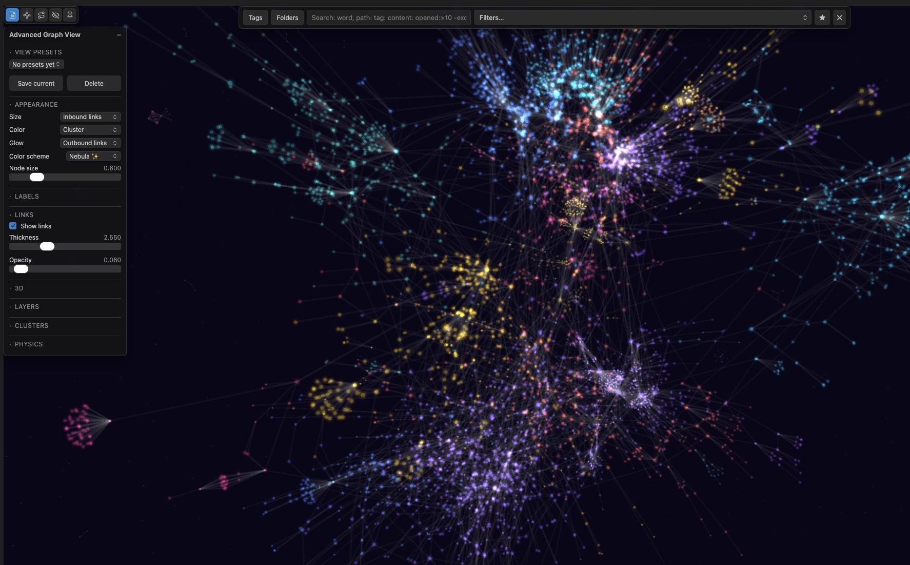

A replacement for Obsidian's Graph View built for 5,000–50,000 notes, where the default graph turns into a hairball. WebGL rendering, PageRank, clusters and usage tracking turn the graph into an analysis tool instead of a decoration.
Every node carries real signal — how often you open it, how it ranks, when it last changed — and you decide what that signal means visually.
Map PageRank, open frequency, edit recency, note age, link counts, folder or tag to size, color or glow.
Pixi.js v8 keeps 10,000+ nodes above 50 FPS. Force layout runs off the UI thread in a Web Worker.
A fully local log of note opens, bucketed by day. Export to CSV or wipe it any time.
Louvain community detection with automatic TF-IDF naming, cluster bubbles, per-cluster zoom and hide.
Orphans, dead ends and broken links surface with live counters — plus an attention map for cooling hubs.
Native graph syntax plus opened:>10, edited:<30d, cluster:"name" and more, with saved presets.
Double-click a node to see only its N-hop neighborhood, with distance-based fading.
Watch the vault grow month by month, then retrace your own navigation path with animated arrows.
Current view as PNG, graph data as JSON or GEXF for Gephi, settings as a portable profile.
Travel the graph one link at a time, No Man's Sky style: point toward a link, click, and the camera flies to the note at the other end.
Aiming is by direction, not by pixel — a hub with fifty overlapping links stays navigable. Nothing moves on hover alone; every trip is a deliberate click.
Backspace retraces the trail, Space lets go of the current note, Esc leaves.
One of several color schemes — glowing, additive blending, dimmed automatically on light themes so nodes stay visible.

Not yet in the Community Plugins directory. Two ways in, for now.
Install BRAT from Community Plugins and enable it. Command palette → BRAT: Add a beta plugin for testing. Paste n23eos/advanced_graph_view and confirm. Then enable Advanced Graph View in Settings → Community Plugins.
Download main.js, manifest.json and styles.css from the latest release. Put them in <vault>/.obsidian/plugins/graph-insight/ and enable the plugin.
Requires Obsidian 1.13.0 or newer. Open the graph via the ribbon icon or the command Advanced Graph View: Open graph view.
No telemetry. No analytics. The plugin makes no network requests at all — everything, including your usage log, stays on your machine.